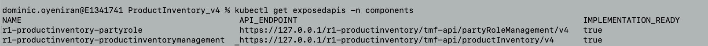

Tutorial to build ODA-Component from Open-API Reference Implementation
This tutorial shows the complete process to package, test and deploy an ODA-Component, using the nodejs reference implementation of the TMF637 Product Inventory Management API as the source code. You should be able to follow the process below using an existing software application as source. The process should work for simple applications - it is intended as a tutorial to get you started. For more complex applications you may have to decompose to multiple containers/micro-services and even multiple ODA-Components.
Note: This tutorial has been updated for v1beta3 version of the ODA component speficiation and should be deployed unto an ODA Canvas environment that supports this version of the specification.
For an introdution to the Open-Digital Architecture component model, take a look at the recording from the Digital Transformation World Series conference:

DTW World Series Masterclass:Leveraging ODA and Open APIs to achieve digital transformation
Step 1. Download Reference Implementation
We are using one of the Reference implementations of the Open-APIs as a starting point. Go to the open-API Table at https://projects.tmforum.org/wiki/display/API/Open+API+Table and download one of the reference implmentation .zip files (we are using the Product Inventory Management API version 4, but you can choose any).
The reference implementation provides a Nodejs API server implementation that requires a MongoDb backend. It provides a nice swagger-ui on top of a Open-API implementation stub. The reference implementation is set-up to run in IBM Cloud (bluemix). To enable it to run locally or in a docker container, we edit the /api/swagger.yaml file to remove the host: field (it will default to looking in the current host), and change the schemes: from https to http.
Step 2. (optionally) test locally with local MongoDb.
In the utils/mongoUtils.js file, you will need to replace the connectHelper with a helper function that uses local connection string:
/* connection helper for running MongoDb from url */
function connectHelper(callback) {
var credentials_uri = "mongodb://localhost:27017/tmf";
let options = {
useNewUrlParser: true
};
MongoClient.connect(credentials_uri, options, function (err, db) {
if (err) {
mongodb = null;
callback(err,null);
} else {
mongodb = db.db("tmf");
callback(null,mongodb);
}
});
}
You can then test the API by using npm install and npm start. You should be able to view the API in a browser by browsing to http://localhost:8080/docs.
Step 3. Configure for use within Kubernetes.
When we depoy this nodejs code for use within Kubernetes, it will connect to MongoDb using a url which is provided by a Kubernetes service. We also use environment variable to allow Kubernetes to, for example, determine the path where the API is exposed.
3.1 Configure MongoDb connection url to use within Kubernetes
In the utils/mongoUtils.js file, you will need to update the local connection string to a url that wil work within Kubernetes (this will match the kubernetes service name for mongoDb). Note we include a release name passed as an environment variable (as we could potentially deploy multiple instances of a component in the same canvas).
/* connection helper for running MongoDb from url */
function connectHelper(callback) {
var releaseName = process.env.RELEASE_NAME; // Release name from Helm deployment
var credentials_uri = "mongodb://" + releaseName + "-mongodb:27017/tmf";
let options = {
useNewUrlParser: true
};
MongoClient.connect(credentials_uri, options, function (err, db) {
if (err) {
mongodb = null;
callback(err,null);
} else {
mongodb = db.db("tmf");
callback(null,mongodb);
}
});
}
3.2 Use environment variables to allow API path to be configured externally
By default the nodejs code will serve the API at the path in the swagger file, which for our example is /tmf-api/tmf-api/productInventory/v4/. We want to potentially deploy multiple component instances in the same environment, and so we add a configurable COMPONENT_NAME to the start of the URL. We need to do this in the swaggerDoc as well as in the swagger-ui-dist/index.html that provides the swagger user interface.
Edit the ./index.js file in the implementation root directory.
const swaggerDoc = swaggerUtils.getSwaggerDoc();
// Get Component instance name from Environment variable and put it at start of API path
var componentName = process.env.COMPONENT_NAME;
if (!componentName) {
componentName = 'productinventory'
}
// Remove leading and trailing slashes from componentName
componentName = componentName.replace(/^\/+|\/+$/g, '');
// end
// Remove leading slashes from basePath and ensure it does not end with a trailing slash
swaggerDoc.basePath = swaggerDoc.basePath.replace(/^\/+|\/+$/g, '');
// add component name to swaggerDoc
swaggerDoc.basePath = '/' + componentName + (swaggerDoc.basePath ? '/' + swaggerDoc.basePath : '');
// add component name to url in swagger_ui - i.e. swagger-ui-dist/index.html
fs.readFile(path.join(__dirname, './node_modules/swagger-ui-dist/index.html'), 'utf8', function (err,data) {
if (err) {
return console.log('error reading the file'+ err);
}
// Ensure exactly one leading slash in basePath before concatenating with '/api-docs'
const basePathWithSingleSlash = swaggerDoc.basePath.replace(/\/+/g, '/');
const result = data.replace(/\/api-docs/g, basePathWithSingleSlash + '/api-docs');
console.log('result of replacing ', result);
console.log('updating ' + path.join(__dirname, './node_modules/swagger-ui-dist/index.html'));
fs.writeFile(path.join(__dirname, './node_modules/swagger-ui-dist/index.html'), result, 'utf8', function (err) {
if (err) return console.log(err);
});
});
//end
3.3 Add home resource at root of the API, and also move where the docs and api-docs are hosted
By default, the swagger tools expose a resource at all the paths in the API (defined in the swagger.yaml file); They don’t offer any response at the root of the API. This can make it harder for a developer to discover the API paths. In addition, a Kubernetes ingress will by default test the root of the API (as a liveness test). If it receives no response, it will assume the microservice is dead and will not route any traffic to it. A simple solution is to create a home resource that provides a set of links to the other API endpoints. The TM Forum Open-API design standards (TMF630) provides a good definition of this resource which is called the home or entrypoint resource.
First, we’ve created a simple module in utils/entrypoint.js to build this entrypoint resource at run-time from the swagger.yaml. Operating at run-time also provides the ability to send a contextual response (that might vary depending on the role of the user, for example).
Next, we integrated this module by adding app.use(swaggerDoc.basePath, entrypointUtils.entrypoint); as the last hook before starting the server.
Finally, we change the path where the ‘api-docs’ and ‘docs’ are exposed. By default they are served at /api-docs and /docs. Again, we want to avoid conflicts if we have multiple components running in the same environment. We solve this by moving them to the full path of the API, so in our example, they would be at /tmf-api/tmf-api/productInventory/v4/
// Serve the Swagger documents and Swagger UI
app.use(middleware.swaggerUi({ apiDocs: swaggerDoc.basePath + 'api-docs',
swaggerUi: swaggerDoc.basePath + 'docs',
swaggerUiDir: path.join(__dirname, 'node_modules', 'swagger-ui-dist') }));
// create an entrypoint
const entrypointUtils = require('./utils/entrypoint');
console.log('app.use entrypoint');
app.use(swaggerDoc.basePath, entrypointUtils.entrypoint);
// Start the server
http.createServer(app).listen(serverPort, function () {
console.log('Your server is listening on port %d (http://localhost:%d)', serverPort, serverPort);
console.log('Swagger-ui is available on http://localhost:'+ serverPort + swaggerDoc.basePath + 'docs', serverPort);
});
Step 4. Package the nodejs implementation into a docker image
Create a dockerfile in the product inventory implementation directory with the instructions to build our image. We are starting with the official node docker image.
FROM node:12
Define the working directory of a Docker container
WORKDIR /usr/app
This image comes with Node.js and NPM already installed so the next thing we need to do is to install the app dependencies.
COPY package*.json ./
RUN npm install
Then we copy the source code.
COPY . .
The app binds to port 8080 so we’ll use the EXPOSE instruction to have it mapped by the docker daemon:
EXPOSE 8080
Finally we define the command that will run the app.
CMD ["node", "index.js"]
The complete dockerfile should look like:
FROM node:12
WORKDIR /usr/app
COPY package*.json ./
RUN npm install
COPY . .
EXPOSE 8080
CMD ["node", "index.js"]
Before we build this dockerfile, we create a .dockerignore file (so the at node_modules packages are not copied into the docker image - this would make the image very large. The RUN npm install command inside the dockerfile will install these on demand).
node_modules
npm-debug.log
To build the docker image, we use the command:
docker build . -t dominico/productinventoryapi:0.2 -t dominico/productinventoryapi:latest
Note: we use the -t to tag the image. We give the image two tags, one with a version number and the other with a latest tag that will overwrite any previously uploaded images.
To check that the images are in the local repository, we use this command:
% docker images
--Result--
REPOSITORY TAG IMAGE ID CREATED SIZE
dominico/productinventoryapi 0.2 6f2819946f76 About an hour ago 910MB
dominico/productinventoryapi latest 6f2819946f76 About an hour ago 910MB
Finally we upload the docker image to a Docker repository. I’m using the default DockerHub with an account dominico that I have created previously. If this is the first time accessing the docker repository you will need to login first with the docker login command.
docker push dominico/productinventoryapi --all-tags
Step 5. Create PartyRole Implementation
Product Inventory component requires a Party Role Microservice that implements the TMF669 Party Role Management API (based on the NodeJs reference implementation). Party Role provides security supporting function and canvas service to the Product Inventory Component.
Follow the previous steps 1-4 to create the Party Role implementation.
Step 6. Create PartyRole Initialisation Implementation
Next we create a party role initialisation node js service (initialization.js) which initialises party roles in the mongo db database.
Excerpts from <roleinti-implementation-directory>/initialization.js as below:
const axios = require('axios');
//create a Admin Party role
const initialPartyRole = {
name: "Admin"
}
// Get Component instance name from Environment variable and put it at start of API path
var releaseName = process.env.RELEASE_NAME;
var componentName = process.env.COMPONENT_NAME;
const createPartyRole = async () => {
var complete = false;
while (complete == false) {
try {
await delay(5000); // retry every 5 seconds
const url = 'http://' + releaseName + '-partyroleapi:8080/' + componentName + '/tmf-api/partyRoleManagement/v4/partyRole';
console.log('POSTing partyRole to: ', url);
const res = await axios.post(
url,
initialPartyRole,
{timeout: 10000});
console.log(`Status: ${res.status}`);
console.log('Body: ', res.data);
complete = true;
....
process.exit(0);
} catch (err) {
console.log('Initialization failed - retrying in 5 seconds');
}
}
};
...
Step 6.1 Package the nodejs implementation into a docker image following step 4 above.
The role initialisation dockerfile file:
FROM node:12
WORKDIR /src
COPY package*.json ./
RUN npm install
COPY . .
CMD ["node", "initialization.js"]
Step 7. Create Component Envelope
The Component Envelope contains the meta-data required to automatically deploy and manage the component in an ODA-Canvas environment. The envelope will contain meta-data about the standard Kubernetes resources, as well as the TM Forum ODA extensions. There is a detailed breakdown of the Component Envelope in ODAComponentDesignGuidelines.
We will use Helm to create the component envelope as a Helm-Chart. This tutorial assumes you have already installed Helm on your local environment.
The first step is to use `helm create
helm create productinventory
The boiler-plate should be visible under the productinventory folder. It contains a Chart.yaml (with meta-data about the chart) and a values.yaml (where we put any default parameters that we want to use). It also contains a charts/ folder (empty) and a templates/ folder (contining some boiler-plate Kubernetes templates).
The Chart.yaml will look something like the code below - no changes are required.
apiVersion: v2
name: productinventory
description: A reference example TMFC005-ProductInventoryManagement ODA Component
# A chart can be either an 'application' or a 'library' chart.
#
# Application charts are a collection of templates that can be packaged into versioned archives
# to be deployed.
#
# Library charts provide useful utilities or functions for the chart developer. They're included as
# a dependency of application charts to inject those utilities and functions into the rendering
# pipeline. Library charts do not define any templates and therefore cannot be deployed.
type: application
# This is the chart version. This version number should be incremented each time you make changes
# to the chart and its templates, including the app version.
# Versions are expected to follow Semantic Versioning (https://semver.org/)
version: 1.1.0
# version: 1.1.0 - upgrade to v1beta3 spec
# version: 1.0.0 - baseline version
# This is the version number of the application being deployed. This version number should be
# incremented each time you make changes to the application. Versions are not expected to
# follow Semantic Versioning. They should reflect the version the application is using.
# It is recommended to use it with quotes.
appVersion: "1.16.0"
The values.yaml file contains some sample parameters that are used in the template samples. Where you see a parameter in curly brackets in the templates file (e.g. {{ .Values.replicaCount }}) - this will insert the value replicaCount from the values file into the template.
The Charts/ folder lets you include existing Helm charts into your new chart - for example, we could include one of the standard MongoDb Helm charts (which would support a high-availability multi-node MongoDb deployment, for example). For simplicity during this tutorial we will leave Charts/ empty.
Finally, most of the details we will create are in the templates/ folder. Take a look inside this folder and you will see multiple sample templates:
deployment.yaml
hpa.yaml
ingress.yaml
service.yaml
serviceaccount.yaml
For our Product Inventory component, we will create three deployments (one for the nodejs container that implements the core Product Inventory API, one for dependent PartyRole API, and one for the mongoDb).
Delete the deployment.yaml template and create three new templates called deployment-productinventoryapi.yaml, deployment-partyroleapi.yaml and the last one deployment-mongodb.yaml.
Copy the code below into deployment-productinventoryapi.yaml. The file uses the Release.Name which is the name given to the instance of the component when deployed by Helm (we could potentially deploy multiple instances in the same ODA-Canvas). Note that we also pass the release name, component name etc as environment variables into the container.
apiVersion: apps/v1
kind: Deployment
metadata:
name: {{.Release.Name}}-productinventoryapi
labels:
oda.tmforum.org/componentName: {{.Release.Name}}-{{.Values.component.name}}
spec:
replicas: 1
selector:
matchLabels:
impl: {{.Release.Name}}-productinventoryapi
template:
metadata:
labels:
impl: {{.Release.Name}}-productinventoryapi
app: {{.Release.Name}}-{{.Values.component.name}}
version: productinventoryapi-0.2
spec:
containers:
- name: {{.Release.Name}}-productinventoryapi
image: dominico/productinventoryapi:0.2
env:
- name: RELEASE_NAME
value: {{.Release.Name}}
- name: COMPONENT_NAME
value: {{.Release.Name}}-{{.Values.component.name}}
- name: MONGODB_HOST
value: {{.Release.Name}}-mongodb
- name: MONGODB_PORT
value: "{{.Values.mongodb.port}}"
- name: MONGODB_DATABASE
value: {{.Values.mongodb.database}}
- name: NODE_ENV
value: production
imagePullPolicy: Always
ports:
- name: {{.Release.Name}}-prodinvapi
containerPort: 8080
Next, we need create the deployment resource for the party Role API. Copy the code below into deployment-partyroleapi.yaml
apiVersion: apps/v1
kind: Deployment
metadata:
name: {{.Release.Name}}-partyroleapi
labels:
oda.tmforum.org/componentName: {{.Release.Name}}-{{.Values.component.name}}
spec:
replicas: 1
selector:
matchLabels:
impl: {{.Release.Name}}-partyroleapi
template:
metadata:
labels:
app: {{.Release.Name}}-{{.Values.component.name}}
impl: {{.Release.Name}}-partyroleapi
version: {{.Values.partyrole.versionlabel}}
spec:
containers:
- name: {{.Release.Name}}-partyroleapi
image: {{.Values.partyrole.image}}
env:
- name: RELEASE_NAME
value: {{.Release.Name}}
- name: COMPONENT_NAME
value: {{.Release.Name}}-{{.Values.component.name}}
- name: MONGODB_HOST
value: {{.Release.Name}}-mongodb
- name: MONGODB_PORT
value: "{{.Values.mongodb.port}}"
- name: MONGODB_DATABASE
value: {{.Values.mongodb.database}}
- name: NODE_ENV
value: production
imagePullPolicy: Always
ports:
- name: {{.Release.Name}}-prapi
containerPort: 8080
startupProbe:
httpGet:
path: /{{.Release.Name}}-{{.Values.component.name}}/tmf-api/partyRoleManagement/v4/partyRole
port: 8080
initialDelaySeconds: 10
periodSeconds: 5
failureThreshold: 30
We also need to deploy a mongoDb. We will use the standard mongoDb image from dockerhub. Copy the code below into: deployment-partyroleapi.yaml
apiVersion: apps/v1
kind: Deployment
metadata:
name: {{.Release.Name}}-mongodb-prod
labels:
oda.tmforum.org/componentName: {{.Release.Name}}-{{.Values.component.name}}
spec:
replicas: 1
selector:
matchLabels:
impl: {{.Release.Name}}-mongodb
template:
metadata:
labels:
impl: {{.Release.Name}}-mongodb
app: {{.Release.Name}}-{{.Values.component.name}}
version: mongo-latest
spec:
containers:
- name: {{.Release.Name}}-mongodb
image: mongo:latest
ports:
- name: {{.Release.Name}}-mongodb
containerPort: {{.Values.mongodb.port}}
volumeMounts:
- name: {{.Release.Name}}-mongodb-pv-storage
mountPath: "/data/db"
volumes:
- name: {{.Release.Name}}-mongodb-pv-storage
persistentVolumeClaim:
claimName: {{.Release.Name}}-mongodb-pv-claim
The mongoDb requires a persistentVolume and so we create a persistentVolumeClaim template persistentVolumeClaim-mongodb.yaml.
apiVersion: v1
kind: PersistentVolumeClaim
metadata:
name: {{.Release.Name}}-mongodb-pv-claim
labels:
oda.tmforum.org/componentName: {{.Release.Name}}-{{.Values.component.name}}
spec:
accessModes:
- ReadWriteOnce
resources:
requests:
storage: 5Gi
We need to make the mongoDb available to the nodejs productinventoryapi image, so we create a Kubernetes Service resource in service-mongodb.yaml. Note the service matches the connection url we created in step 3.
apiVersion: v1
kind: Service
metadata:
name: {{.Release.Name}}-mongodb
labels:
oda.tmforum.org/componentName: {{.Release.Name}}-{{.Values.component.name}}
app: {{.Release.Name}}-{{.Values.component.name}}
spec:
ports:
- port: {{.Values.mongodb.port}}
targetPort: {{.Release.Name}}-mongodb
name: tcp-{{.Release.Name}}-mongodb
type: NodePort
selector:
impl: {{.Release.Name}}-mongodb
We need to expose the product inventory API using a Service as well in service-productinventoryapi.yaml.
apiVersion: v1
kind: Service
metadata:
name: {{.Release.Name}}-productinventoryapi
labels:
app: {{.Release.Name}}-productinventoryapi
oda.tmforum.org/componentName: {{.Release.Name}}-{{.Values.component.name}}
spec:
ports:
- port: 8080
targetPort: 8080
name: {{.Release.Name}}-productinventoryapi
type: NodePort
selector:
impl: {{.Release.Name}}-productinventoryapi
The party role API needs to be exposed using a service in service-partyroleapi.yaml.
apiVersion: v1
kind: Service
metadata:
name: {{.Release.Name}}-partyroleapi
labels:
app: {{.Release.Name}}-partyroleapi
oda.tmforum.org/componentName: {{.Release.Name}}-{{.Values.component.name}}
spec:
ports:
- port: 8080
targetPort: {{.Release.Name}}-prapi
name: http-{{.Release.Name}}-partyroleapi
type: NodePort
selector:
impl: {{.Release.Name}}-partyroleapi
Lastly, we create a kubernetes job resource in order to initialise a role using the party role API in cronjob-roleinitialization.yaml
apiVersion: batch/v1
kind: Job
metadata:
name: {{.Release.Name}}-roleinitialization
labels:
oda.tmforum.org/componentName: {{.Release.Name}}-{{.Values.component.name}}
spec:
template:
metadata:
labels:
app: {{.Release.Name}}-roleinitialization
spec:
containers:
- name: {{.Release.Name}}-roleinitialization
image: dominico/roleinitialization:latest
env:
- name: RELEASE_NAME
value: {{.Release.Name}}
- name: COMPONENT_NAME
value: {{.Release.Name}}-{{.Values.component.name}}
imagePullPolicy: Always
restartPolicy: OnFailure
backoffLimit: 10
We have created all the Kubernetes resources to deploy the mongoDb, party role and product inventory nodejs containers and expose them as services. The final step is to add the ODA-Component meta-data. This meta-data will be used at run-time to configure the canvas services. Create the code below in component-productinventory.yaml.
This is a relatively simple component that just exposes one API as part of its coreFunction. Note that we have included the release name and component name in the root of the API path (this is a good pattern to follow so that the API doesn’t conflict with any other components deployed in the same environment).
apiVersion: oda.tmforum.org/v1beta3
kind: Component
metadata:
name: {{.Release.Name}}-{{.Values.component.name}}
labels:
oda.tmforum.org/componentName: {{.Release.Name}}-{{.Values.component.name}}
spec:
id: {{.Values.component.id}}
name: {{.Values.component.name}}
functionalBlock: {{.Values.component.functionalBlock}}
publicationDate: {{.Values.component.publicationDate}}
status: specified
version: {{.Values.component.version}}
description: "Simple Product Inventory ODA-Component from Open-API reference implementation."
maintainers:
- name: Dominic Oyeniran
email: dominic.oyeniran@vodafone.com
owners:
- name: Dominic Oyeniran
email: dominic.oyeniran@vodafone.com
coreFunction:
exposedAPIs:
- name: productinventorymanagement
specification: ["https://raw.githubusercontent.com/tmforum-apis/TMF637_ProductInventory/master/TMF637-ProductInventory-v4.0.0.swagger.json"]
implementation: {{.Release.Name}}-productinventoryapi
apitype: openapi
path: /{{.Release.Name}}-{{.Values.component.name}}/tmf-api/productInventory/v4
developerUI: /{{.Release.Name}}-{{.Values.component.name}}/tmf-api/productInventory/v4/docs
port: 8080
dependentAPIs:
- name: party
apitype: openapi
specification: https://open-api.tmforum.org/TMF632-Party-v4.0.0.swagger.json
eventNotification:
publishedEvents: []
subscribedEvents: []
managementFunction:
exposedAPIs: []
dependentAPIs: []
securityFunction:
controllerRole: {{.Values.security.controllerRole }}
exposedAPIs:
- name: partyrole
specification: ["https://raw.githubusercontent.com/tmforum-apis/TMF669_PartyRole/master/TMF669-PartyRole-v4.0.0.swagger.json"]
implementation: {{.Release.Name}}-partyroleapi
apitype: openapi
path: /{{.Release.Name}}-{{.Values.component.name}}/tmf-api/partyRoleManagement/v4
developerUI: /{{.Release.Name}}-{{.Values.component.name}}/tmf-api/partyRoleManagement/v4/docs
port: 8080
Finally we have to create the parameters in the values.yaml file.
# Default values for productinventory.
# This is a YAML-formatted file.
# Declare variables to be passed into your templates.
component:
# Specifies whether a service account should be created
id: TMFC005
name: productinventory
functionalBlock: CoreCommerce
publicationDate: 2023-08-22T00:00:00.000Z
version: "1.0.1"
storageClassName: default
security:
controllerRole: Admin
service:
type: ClusterIP
port: 80
mongodb:
port: 27017
database: tmf
partyrole:
image: lesterthomas/partyroleapi:1.0
versionlabel: partyroleapi-1.0
api:
image: dominico/productinventoryapi:latest
versionlabel: productinventoryapi-0.2
Step 6. Test component envelope using component CTK
The CTK will operate against an instance of the component. We can generate a kubernetes manifest of an instance using the helm template [instance namme] [chart] command. We can take the output of this command into a temporary file:
helm template test productinventory > test-instance.component.yaml
If you examine the test-instance.component.yaml you will see all the kubernetes resources (deployments, services, persistentVolumeClaim) as well as a component resource. All the resources are labelled as belonging to the component. Also the component describes its core function (exposing a single API).
We can test that this component instance conforms to the ODA-Component standard by using the component CTK: Download the ODA-Component CTK from https://github.com/tmforum-oda/oda-component-ctk/.
Within the oda-component-ctk folder, install the ctk.
npm install
Then run the static ctk against the component envelope, you would need to specify the correct path to the test-instance.component.yaml created earlier.
npm run L1-static ../ProductInventory/test-instance.component.yaml
You should get an output like the image below. If you receive any errors, fix the issue in the helm chart yaml file and try again.

Step 8. Deploy the component envelope into Open Digital Lab canvas
Connect to the Open Digital Lab: Get the kubectl config from the rancher environment at https://rke.tmforum.org/c/c-85kcq/monitoring - click the Kubeconfig File button in the top right:

Copy this into your ~/.kube/config file.
You can test the connection using kubectl get all --namespace components. (You should either see a message No resources found in components namespace. or you may retrieve a list of kubernetes resources).
To permanently save the namespace for all subsequent kubectl commands use:
kubectl config set-context --current --namespace=components
Install the component using Helm, we call the release name r1 . Ensure the release name is not in conflict with release name already assigned to other components in the open digital lab:
helm install r1 productinventory/
You can then view the component in kubectl:
kubectl get components
The kubectl get components will show all the deployed components and the deployment status. Initially these details will be blank - the component may take a few seconds to fully deploy. Once deployed, it should look like:
You can also view the component API endpoint in kubectl:
kubectl get apis
The kubectl get apis command shows details of exposed apis and a developer-ui (if supplied). Initially these details will be blank - the component may take a few seconds to fully deploy. Once deployed, it should look like:

If you navigate to the root or the API (in a web browser or in postman), you should see the entrypoint of the API:
If you navigate to the developer-ui, you shold see the swagger-ui tool:
Finally, you can run the dynamic ctk against the component envelope.
npm dynamic ../oda-ca-docs/ODA-Component-Tutorial/test-instance.component.yaml
You should get a result like the image below:

This is the last step. You would have succesffully deployed an ODA Component unto an ODA Canvas environment!
Directory Structure
The high level directory structure for our reference implementation is depicted below.
Also, the reference implementation sourcecode is available on the ODA-Component-Tutorial Git Hub Repo
ISSUES & resolution
Kubernetes ingress expect a 200 response at the root of the API. Without this, they do not create an ingress and instead return a 503 error. An additional ‘entrypoint’ middleware hook in the index.js has been created to resolve this. This returns an entrypoint (or homepage) response for the API (following the TMF630 Design Guidelines).
// create an entrypoint
console.log('app.use entrypoint');
app.use(swaggerDoc.basePath, entrypointUtils.entrypoint);
Due to a node version issue (i think!) the generated API RI does not work on the latest v15 of node. I have created container based on node v12. The issue is with the fs.copyFileSync function: The v15 expects the third parameter to be an optional
modewhilst the current implementation has a call-back error function.Api-docs are exposed at /api-docs which means that you can’t host multiple apis on the same server. Therefore, it is hosted at
tmf-api/productInventory/v4/api-docsinstead (and the swagger-ui attmf-api/productInventory/v4/docs).The component name has been included in the root of the API (so that multiple instances of the API can be deployed in the same server). For a Helm install with release name
test, the api is deployed at:/test-productinventory/tmf-api/productInventory/v4/and with a Helm install with release namer1, the api is deployed at:/test-productinventory/tmf-api/productInventory/v4/. Component release name must be unique and cannot be reused.